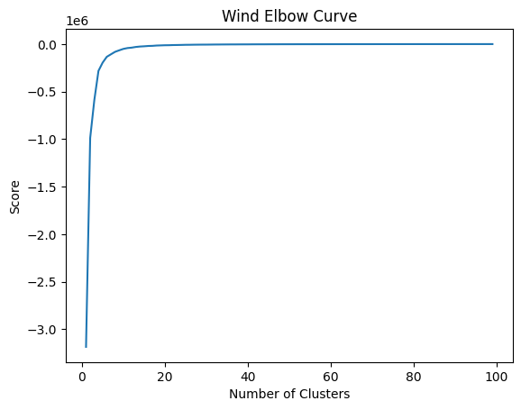
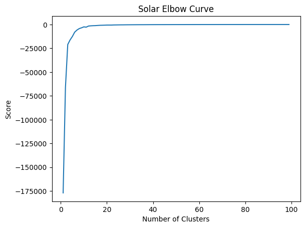
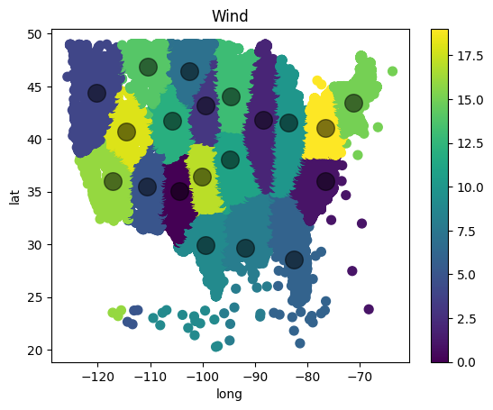
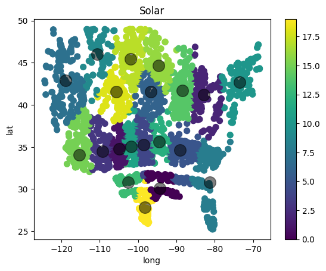

import pandas as pd
import matplotlib.pyplot as plt
from sklearn.cluster import KMeansData Showcase and Manipulation
wind_df = pd.read_csv('../data/wind.csv')
solar_df = pd.read_csv('../data/solar.csv')
wind_df.head(10)| id | lat | long | wind_speed | farm_type | capacity | capacity_factor | power_generation | estimated_cost | |
|---|---|---|---|---|---|---|---|---|---|
| 0 | 0 | 23.510410 | -117.147260 | 6.07 | offshore | 16 | 0.169 | 23687.04 | 20800000 |
| 1 | 1 | 24.007446 | -93.946777 | 7.43 | offshore | 16 | 0.302 | 42328.32 | 20800000 |
| 2 | 2 | 25.069138 | -97.482483 | 8.19 | offshore | 16 | 0.375 | 52560.00 | 20800000 |
| 3 | 3 | 25.069443 | -97.463135 | 8.19 | offshore | 16 | 0.375 | 52560.00 | 20800000 |
| 4 | 4 | 25.069763 | -97.443756 | 8.19 | offshore | 16 | 0.376 | 52700.16 | 20800000 |
| 5 | 5 | 25.070091 | -97.424377 | 8.19 | offshore | 16 | 0.375 | 52560.00 | 20800000 |
| 6 | 6 | 25.070404 | -97.404999 | 8.19 | offshore | 16 | 0.375 | 52560.00 | 20800000 |
| 7 | 7 | 25.086678 | -97.482849 | 8.18 | offshore | 16 | 0.375 | 52560.00 | 20800000 |
| 8 | 8 | 25.087006 | -97.463470 | 8.19 | offshore | 16 | 0.376 | 52700.16 | 20800000 |
| 9 | 9 | 25.087318 | -97.444092 | 8.19 | offshore | 16 | 0.376 | 52700.16 | 20800000 |
solar_df.head(10)| id | lat | long | irradiance | farm_type | capacity | capacity_factor | power_generation | estimated_cost | |
|---|---|---|---|---|---|---|---|---|---|
| 0 | 0 | 25.896492 | -97.460358 | 5.634079 | large_community | 5.000 | 0.235 | 1.028219e+04 | 13300000 |
| 1 | 1 | 26.032654 | -97.738098 | 5.616413 | small_utility | 5.000 | 0.234 | 1.024995e+04 | 13300000 |
| 2 | 2 | 26.059063 | -97.208252 | 5.746738 | small_community | 0.150 | 0.239 | 3.146339e+02 | 399000 |
| 3 | 3 | 26.078449 | -98.073364 | 5.742196 | small_utility | 5.000 | 0.239 | 1.047951e+04 | 13300000 |
| 4 | 4 | 26.143227 | -98.311340 | 5.817187 | small_utility | 5.000 | 0.242 | 1.061637e+04 | 13300000 |
| 5 | 5 | 26.149040 | -98.075409 | 5.701752 | large_community | 5.000 | 0.238 | 1.040570e+04 | 13300000 |
| 6 | 6 | 26.180355 | -97.367737 | 5.720004 | medium_utility | 500.000 | 0.238 | 1.043901e+06 | 1330000000 |
| 7 | 7 | 26.254963 | -98.078491 | 5.730308 | small_residential | 0.005 | 0.239 | 1.045781e+01 | 13300 |
| 8 | 8 | 26.272160 | -98.098694 | 5.734213 | large_utility | 2000.000 | 0.239 | 4.185975e+06 | 5320000000 |
| 9 | 9 | 26.272625 | -98.078979 | 5.755140 | small_community | 0.150 | 0.240 | 3.150939e+02 | 399000 |
wind_X = wind_df.loc[:, wind_df.columns[1:3]]
solar_X = solar_df.loc[:, solar_df.columns[1:3]]K_clusters = range(1,100)
wind_kmeans = [KMeans(n_clusters=i, n_init='auto') for i in K_clusters]
wind_Y_axis = wind_X[['lat']]
wind_X_axis = wind_X[['long']]
solar_kmeans = [KMeans(n_clusters=i, n_init='auto') for i in K_clusters]
solar_Y_axis = solar_X[['lat']]
solar_X_axis = solar_X[['long']]wind_score = [wind_kmeans[i].fit(wind_Y_axis).score(wind_Y_axis) for i in range(len(wind_kmeans))]solar_score = [solar_kmeans[i].fit(solar_Y_axis).score(solar_Y_axis) for i in range(len(solar_kmeans))]plt.plot(K_clusters, wind_score)
plt.xlabel('Number of Clusters')
plt.ylabel('Score')
plt.title('Wind Elbow Curve')
plt.show()
plt.plot(K_clusters, solar_score)
plt.xlabel('Number of Clusters')
plt.ylabel('Score')
plt.title('Solar Elbow Curve')
plt.show()


wind_n_clusters = 20
wind_kmeans = KMeans(wind_n_clusters, init='k-means++', n_init='auto')
wind_kmeans.fit(wind_X[wind_X.columns[0:2]])
solar_n_clusters = 20
solar_kmeans = KMeans(solar_n_clusters, init='k-means++', n_init='auto')
solar_kmeans.fit(solar_X[solar_X.columns[0:2]])KMeans(n_clusters=20)In a Jupyter environment, please rerun this cell to show the HTML representation or trust the notebook.
On GitHub, the HTML representation is unable to render, please try loading this page with nbviewer.org.
KMeans(n_clusters=20)
wind_X['cluster_label'] = wind_kmeans.fit_predict(wind_X[wind_X.columns[0:2]])
wind_X.head(10)| lat | long | cluster_label | |
|---|---|---|---|
| 0 | 23.510410 | -117.147260 | 16 |
| 1 | 24.007446 | -93.946777 | 8 |
| 2 | 25.069138 | -97.482483 | 9 |
| 3 | 25.069443 | -97.463135 | 9 |
| 4 | 25.069763 | -97.443756 | 9 |
| 5 | 25.070091 | -97.424377 | 9 |
| 6 | 25.070404 | -97.404999 | 9 |
| 7 | 25.086678 | -97.482849 | 9 |
| 8 | 25.087006 | -97.463470 | 9 |
| 9 | 25.087318 | -97.444092 | 9 |
solar_X['cluster_label'] = solar_kmeans.fit_predict(solar_X[solar_X.columns[0:2]])
solar_X.head(10)| lat | long | cluster_label | |
|---|---|---|---|
| 0 | 25.896492 | -97.460358 | 19 |
| 1 | 26.032654 | -97.738098 | 19 |
| 2 | 26.059063 | -97.208252 | 19 |
| 3 | 26.078449 | -98.073364 | 19 |
| 4 | 26.143227 | -98.311340 | 19 |
| 5 | 26.149040 | -98.075409 | 19 |
| 6 | 26.180355 | -97.367737 | 19 |
| 7 | 26.254963 | -98.078491 | 19 |
| 8 | 26.272160 | -98.098694 | 19 |
| 9 | 26.272625 | -98.078979 | 19 |
wind_centers = wind_kmeans.cluster_centers_
wind_labels = wind_kmeans.predict(wind_X[wind_X.columns[0:2]])
solar_centers = solar_kmeans.cluster_centers_
solar_labels = solar_kmeans.predict(solar_X[solar_X.columns[0:2]])wind_X.plot.scatter(x = 'long', y = 'lat', c=wind_labels, s=50, cmap='viridis')
plt.scatter(wind_centers[:, 1], wind_centers[:, 0], c='black', s=200, alpha=0.5)
plt.title("Wind")
plt.show()
solar_X.plot.scatter(x = 'long', y = 'lat', c=solar_labels, s=50, cmap='viridis')
plt.scatter(solar_centers[:, 1], solar_centers[:, 0], c='black', s=200, alpha=0.5)
plt.title("Solar")
plt.show()


wind_df.drop('lat', axis=1, inplace=True)
solar_df.drop('lat', axis=1, inplace=True)
wind_df.long = wind_X.cluster_label
solar_df.long = solar_X.cluster_label
wind_df.rename(columns={"long":"cluster_id"}, inplace=True)
solar_df.rename(columns={"long":"cluster_id"}, inplace=True)
wind_df.to_csv('../data/wind_clustered.csv', index=None, header=True)
solar_df.to_csv('../data/solar_clustered.csv', index=None, header=True)